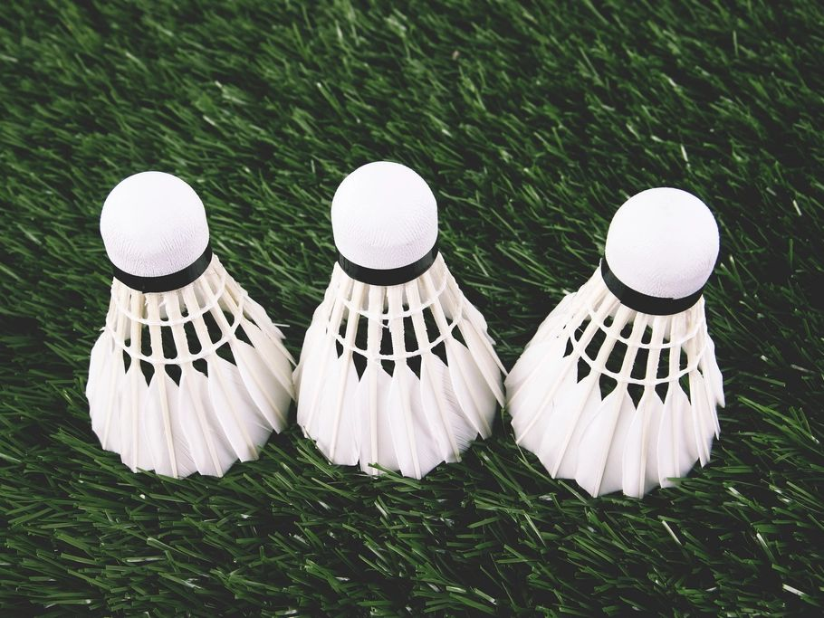
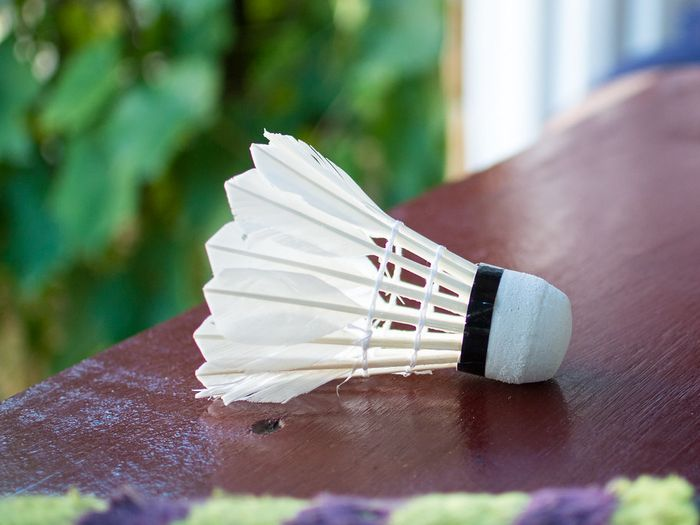
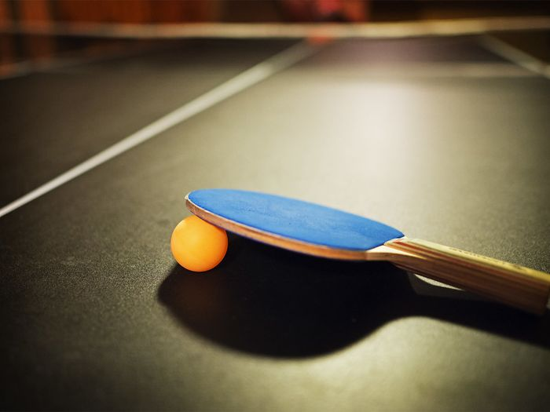
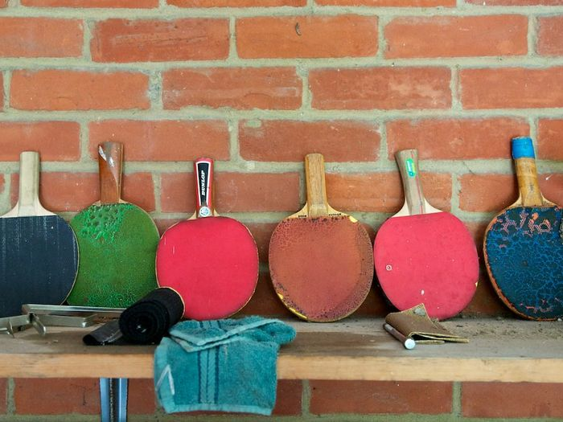

Free online scoreboard
Keep score like a pro. No app to install.
A digital scoreboard, badminton score counter, and table tennis scoreboard in one, with pickleball and volleyball presets too. Set the rules, press +1, and let Tally handle sets, serve, and match point.

Scoreboard
Keyboard: A point to side A · L point to side B · Z undo
One digital scoreboard, four sports
A digital scoreboard with presets that know the rules

Badminton score counter
Best of 3 games to 21, win by 2, capped at 30. The rally winner serves.

Table tennis scoreboard
Games to 11, serve switches every 2 points and every point from deuce.

Pickleball & volleyball
Rally scoring to 11 or 25, with the deciding set shortened to 15 for volleyball.
FAQ
Using the online scoreboard
How do I keep score with the badminton score counter?
Choose the Badminton preset (best of 3, 21 points, win by 2, capped at 30), then press +1 for whoever wins each rally. The rally winner serves next and sets advance automatically.
Can I use the online scoreboard on a TV?
Yes. Open Tally in a browser on a laptop connected to the TV and press Full screen. Scores update instantly from the keyboard.
Does the table tennis scoreboard switch serve?
Yes. The Table tennis preset switches serve every 2 points, and every point once both players reach 10.